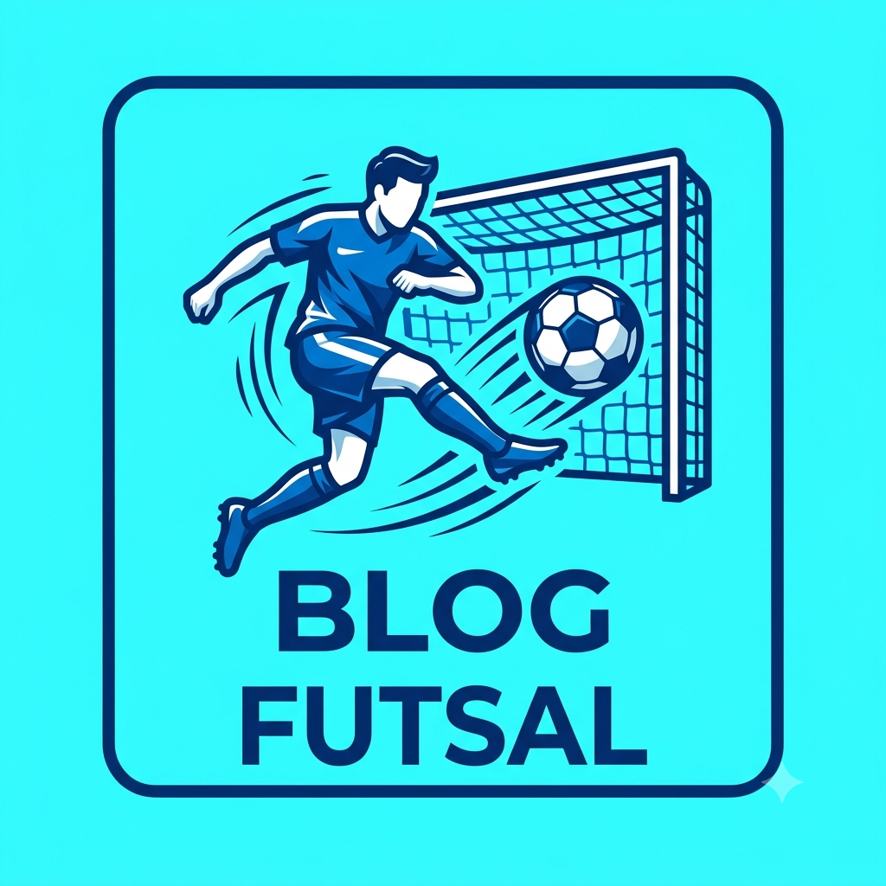
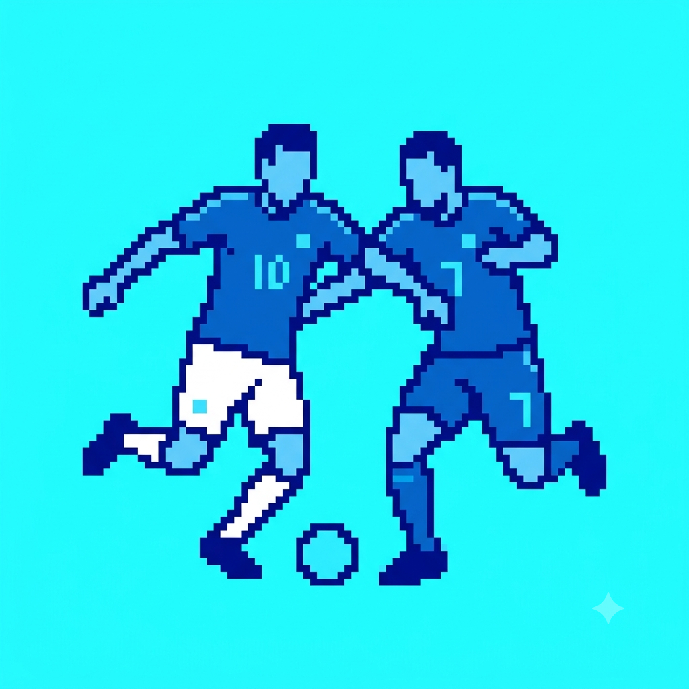
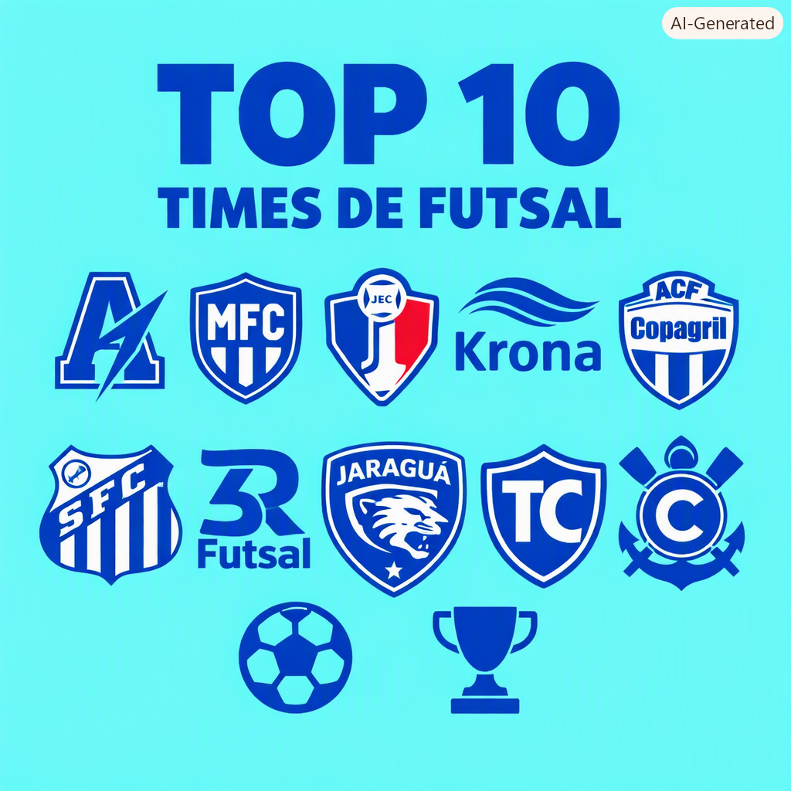

Vinícius Bartz
Nesse blog falarei sobre futsal

Eu irei compartilhar conhecimentos sobre os 10 melhores jogadores de futsal do mundo
Vinícius Bartz
Nesse blog falarei sobre futsal

Top 10 melhores jogadores de futsal do mundo
Por Vinícius Bartz
Nessa postagem estarei falando sobre o top 10 melhores jogadores de futsal do mundo:

FPFS-Federação Paranaense de Futsal
Feito e criado por: Vinícius Bartz
A Federação Paranaense de Futebol de Salão – FPFS comunica à comunidade esportiva, filiados, clubes, atletas, dirigentes e públicos de interesse que o Presidente Anderson de Andrade protocolou, nesta data, pedido de licença temporária pelo período de 180 dias, fundamentado em motivos de foro íntimo e conflitos de agenda que momentaneamente inviabilizam o exercício integral das atribuições da Presidência, nos termos do Estatuto da Entidade.